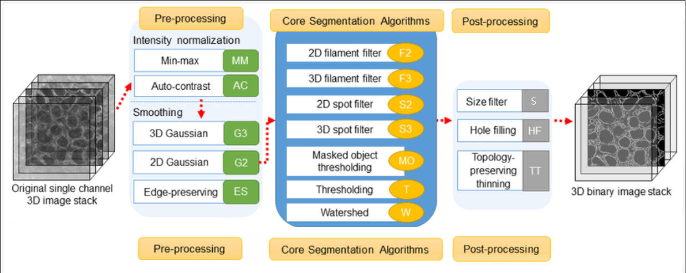
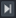

Allen Cell Segmenter#
By Praju Anekal üî¨
Learning Objectives#
In this lesson, you’ll learn how to use and configure the Allen Cell Segmenter napari plugin to complete a segmentation workflow. The lesson includes:
Time to learn: 1 hour
Prerequisites#
Importance |
Notes |
||
|---|---|---|---|
Mandatory |
In the napari viewer, verify your version of napari by clicking on the Help menu, then napari info. |
||
Mandatory | Install this plugin from within the napari viewer: python -m pip install napari==0.4.xx where xx is the desired version of napari. |
||
Image stack (3D data: 8, 12, and 16 bit) |
Mandatory |
In some cases, the plugin may return error messages when the image scale is imported incorrectly. If this occurs, remove any pixel scaling before repeating this step. |
|
Optional |
Although napari may support importing other file types, this sample image is a tiff. |
What does this plugin do?#
The Allen Cell Segmenter consists of a pre-designed classical image segmentation workflow for many types of cellular components and 3D data sets.
The plugin workflow itself is broken into 3 discrete parts, (please see graphic at the top of this article):
Preprocessing
Segmentation
Post processing
It allows you to select your workflow from a library of images, choosing whichever image most resembles your data. You can then adjust parameters within the workflow steps to optimize the segmentation quality of the data that results.
Once segmentation is completed, Allen Cell outputs a segmented mask which can be analyzed by another napari plugin (e.g. PartSeg).
Note
Beyond these basic functions, Allen Cell Segmenter also has an iterative deep-learning component based on user-trained pixel classification (which is not within the scope of this lesson).
Demo of Allen Cell Segmenter#
The following video demonstrates how to use the Allen Cell Segmenter plugin.
Note: To change the speed of the video, click the cog wheel in the lower right corner, then speed, and select the desired speed.
A more detailed description of the protocol is given in the Protocol for segmentation workflow article. A summary of the basic steps is:
Drag and drop your image into napari or open it from the File menu.
Use the slider bar at the bottom of the screen to choose the part of the image to examine.
Adjust the speed at which the image is displayed by right clicking the play button at the left end of the playback bar: and choosing the number of frames/second to display down to one frame/second.
After pausing playback, you can move one frame at a time by clicking the or  buttons at either end of the playback bar.
Ensure you have already installed the napari-allencell-segmenter plugin.
Load the napari-allencell-segmenter plugin Workflow editor.
(Plugins>napari-allencell-segmenter>Workflow editor)
A panel appears on the right side of the screen with a selection of images.Change option 2 to Channel 0.
Choose the image that most closely matches the one you are examining. The panel now shows options for Preprocessing, Core, and Postprocessing.
Preprocessing
Intensity Normalization - select scaling_param 1 and scaling_param 2.
Edge Preserving Smoothing - no parameters needed.
Core
3. Filament Filter 3Dsigmas
cutoff
Postprocessing
4. Size Filtermin_size
method
You can run your workflow and then save it.
The above video demonstrates how to complete the Allen Cell segmentation workflow within napari, and showcases how adjusting parameters affects the resulting segmentation.
Supporting materials#
Advanced materials#
Detailed video on the algorithms behind the Allen Cell Segmenter